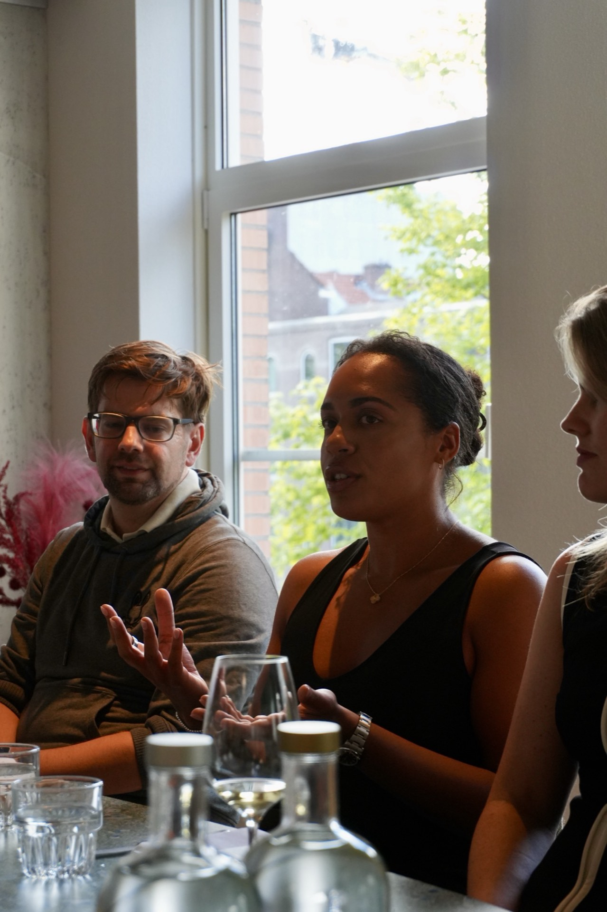
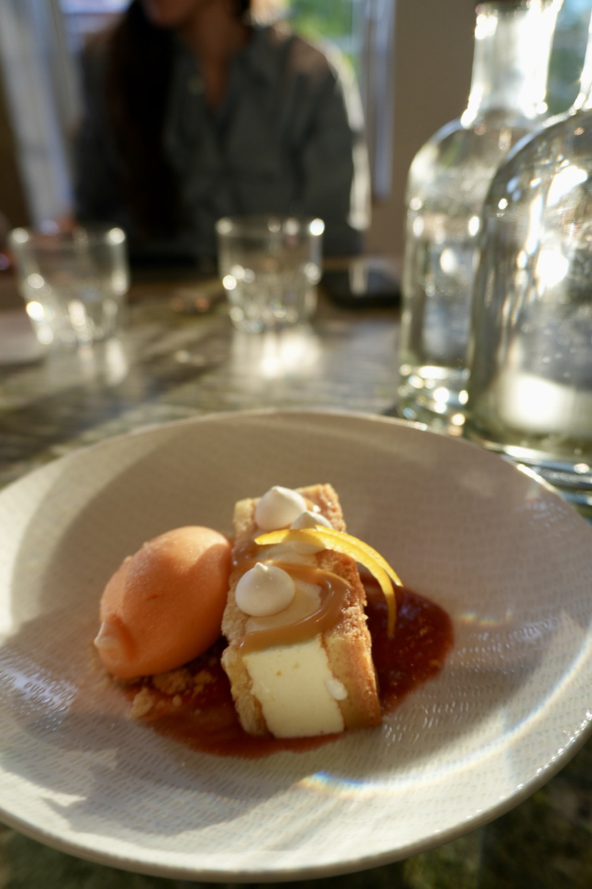
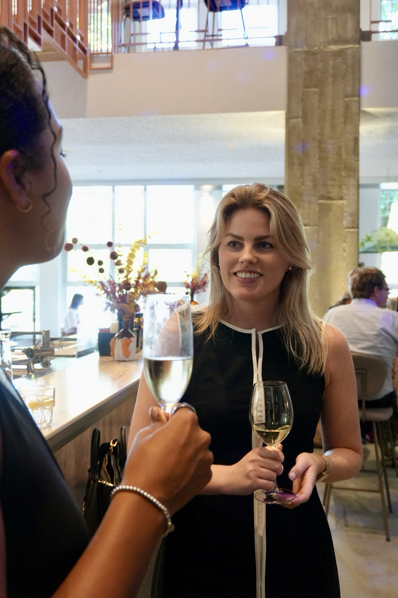

Some rooms you have to imagine before you can walk into them. For two years this one existed mostly in conversation, wouldn't it be lovely if, and then, on a warm Thursday in July, it had name cards. Around thirty founders gathered at Capital C, the old Diamantbeurs: a building that once traded in one kind of gold and, for an evening, hosted another. Here's what made it worth the seat.
The masterclass: what one person can do now
Tatiana Maes, founder of Spaartje, took the room with the question we'd named the evening after: what can one person do with AI, now? Not someday, not with a team of forty. This quarter, with the tools already on the table. She was practical to the point of generosity: real workflows, real numbers, the unglamorous truth that most of the advantage goes to whoever simply starts. Notebooks came out. Nobody asked for the slides; everybody asked what she'd do first. You left with things you could actually use on Monday morning, the rarest thing a talk can give you.

The dinner: a table worth staying at
Then the part we'd imagined longest: one long table, a name card at every seat, the last of the evening sun through the windows. Dinner was by Capital Kitchen, and it was genuinely lovely: roasted baby carrots with maple and pecans, seared sea bass on parsnip purée, slow-cooked free-range chicken, and a lemon meringue with rhubarb and orange sorbet to end. Good wine, poured generously. Care shows. When the food and the room are looked after, people relax, and people who relax actually talk.

The part that lasts: the people
Seating was deliberate. The person beside you was chosen, a little. Somewhere between the starter and the last glass, the evening stopped being an event and became a dinner among people who intended to know each other. Founders talk differently when no one's selling anything. The conversation goes to the real stuff: what's hard, what's working, who you should meet. That's the whole design.
“I'd been looking for a room like this for a long time. People who feel like friends, but are just as ambitious.”

By ten, the light was low and the goodbyes were slow, the good sign. As one guest put it on the way out: “I didn't want to leave. The conversations were just that good.” Introductions were promised and, we happen to know, kept.
Come to the next one
The next table is already being planned, and seats go to the list first. Join it, and we'll write to you when the evening opens. One quiet email, nothing more.